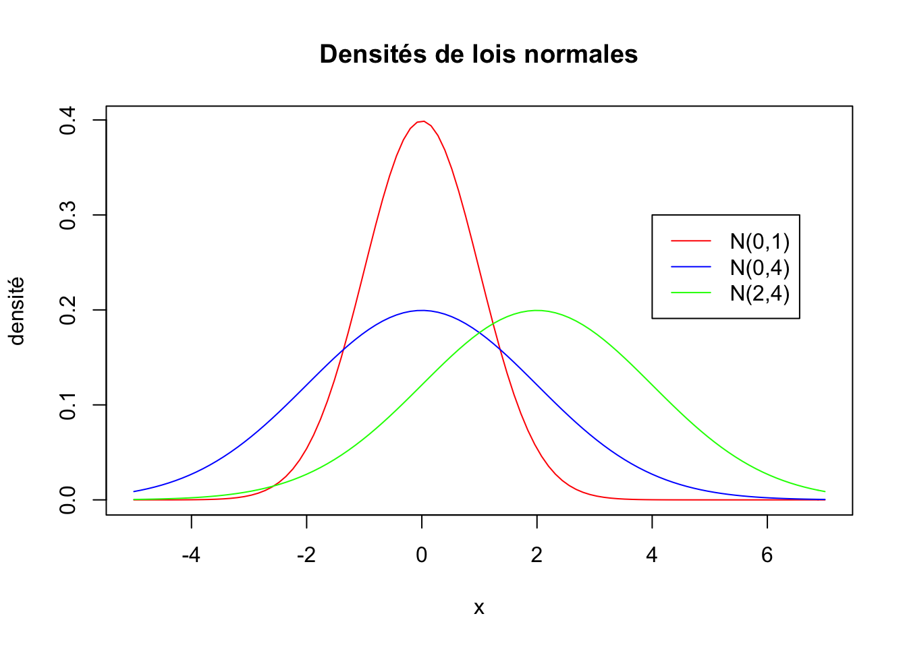

Chapter 3 Probabilités
3.1 Densité et fonction de répartition d’une variable quantitative continue
La variable aléatoire \(X\) associée à une fonction \(f\) donnée et définie sur \(\mathbb{R}\) représente le fait de tirer un nombre au hasard avec la probabilité suivante :\[{\rm Proba}(X\leq t)=\int_{-\infty}^{t} f(x) dx = F(t)\] où \(t\) est un réel fixé.
Naturellement, cette écriture n’a de sens que si :
\(f\) est une fonction positive sur \(\mathbb{R}\)
\(\displaystyle\int_{-\infty}^{+\infty} f(x) dx=1\).
\(f\) est appelée “densité” de \(X\).
Cette probabilité est notée \(F(t)\) : \(F\), vue comme une fonction de \(t\) définie sur \(\mathbb{R}\), est appelée fonction de répartition de \(X\). La valeur \(F(t)\) peut être vue comme l’aire de la surface délimitée par la demi-droite \(]-\infty,t]\), la droite \(y=t\) et la courbe représentative de \(f\).
- L’espérance de \(X\) (appelée aussi moyenne de \(X\)) correspond à la valeur suivante :
\[E(X)=\int_{-\infty}^{+\infty} xf(x)\,dx.\]
- La variance de \(X\) est :
\[{\rm Var}(X)=\mathbb E\left[ (X-\mathbb E[X])^2 \right] = \mathbb E[X^2] - \mathbb E[X]^2 = \int_{-\infty}^{+\infty}x^2f(x)\,dx-\mathbb E[X]^2.\]
3.2 Exemple : la loi normale
On appelle loi normale la loi d’une variable aléatoire réelle continue \(X\) dont la densité s’écrit : \[f(x)=\frac{1}{\sigma\sqrt{2\pi}}e^{-\displaystyle\frac{1}{2}\frac{(x-\mu)^2}{\sigma^2}}\] où \(\mu\) est la moyenne de \(X\) et \(\sigma^2\) est la variance de \(X\). On dit que \(X\) suit la loi Normale de moyenne \(\mu\) et de variance \(\sigma^2\) et on note \(X\leadsto \mathcal N(\mu,\sigma^2)\).
Si \(\mu=0\), on dit que \(X\) est centrée.
Si \(\sigma^2=1\), on dit que \(X\) est réduite.
Une propriété importante sur la loi normale est la suivante :
Remarque : Attention ! Cette propriété nous dit que pour centrer et réduire une loi normale, il faut lui retrancher sa moyenne et diviser par l’écart type (et non pas la variance).
Les figures suivantes nous donnent des exemples de densité de différentes lois normales.
curve(dnorm(x,0,1),from = -5,to = 7,col="red",main="Densités de lois normales",ylab="densité")
curve(dnorm(x,0,2),from = -5,to = 7,col="blue",add = TRUE)
curve(dnorm(x,2,2),from = -5,to = 7,col="green",add = TRUE)
legend(4,0.3,legend=c("N(0,1)","N(0,4)","N(2,4)"),col = c("red","blue","green"),lty=1)
3.3 Loi forte des grands nombres
3.4 Théorème central limite
Le théorème central limite dit que, si un grand nombre de variables aléatoires indépendantes ayant la même loi sont ajoutées, leur somme suit approximativement une loi normale.
Pour des échantillons distribués suivant une loi binomiale, la loi binomiale \(B(n,p)\) se comporte comme la loi normale \(\mathcal N(np,np(1-p))\) pour \(n\) grand.
Si \(\{X_i\}_{i=1}^{\infty}\) est une suite de variables aléatoires indépendantes de même loi et de moyenne \(\mu\) et de variance \(\sigma^2\), alors \(\bar X_n=\frac{\displaystyle \sum_{i=1}^nX_i}{n}\) suit approximativement une loi normale \(\mathcal N(\mu,\sigma^2/n)\) pour \(n\) grand
ou, \(Z_n=\frac{\bar X_n-\mu}{\sigma/\sqrt{n}}\), variable centrée réduite issue de \(\bar X_n\), suit approximativement une loi normale \(\mathcal N(0,1)\) pour \(n\) grand.